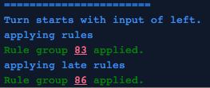

- Documentation
- Bird's-eye View
- Prelude
Bird's-eye view of a PuzzleScript file
A puzzlescript file is divided into 8 sections:
Prelude
Before any of the "official" sections are declared, you can give details about your project in this section, and also set some editor options.
title 2D Whale World
author Stephen Lavelle
homepage www.increpare.com
require_player_movement
key_repeat_interval 0.12
Here are the possible options:
- author Stephen Lavelle
- Your name goes here. This will appear in the title screen of the game.
- color_palette mastersystem
- By default, when you use colour names, they are pulled from a variation of Arne's 16-Colour palette. However, there are other palettes to choose from:
- 1 - mastersystem
- 2 - gameboycolour
- 3 - amiga
- 4 - arnecolors
- 5 - famicom
- 6 - atari
- 7 - pastel
- 8 - ega
- 9 - amstrad
- 10 - proteus_mellow
- 11 - proteus_rich
- 12 - proteus_night
- 13 - c64
- 14 - whitingjp
(you can also refer to them by their numerical index)
- again_interval 0.1
- The amount of time it takes an 'again' event to trigger.
- background_color blue
- Can accept a color name or hex code (in the form #412bbc). Controls the background color of title/message screens, as well as the background color of the website. Text_color is its sibling.
- debug
- This outputs the compiled instructions whenever you build your file. For instance, the line
[ > Player | Crate ] -> [ > Player | > Crate ]
is compiled into four instructions, as the output from debug shows:
Rule Assembly : (4 rules )
===========
(52) UP [ up player | crate ] -> [ up player | up crate ]
(52) DOWN [ down player | crate ] -> [ down player | down crate ]
(52) LEFT [ left player | crate ] -> [ left player | left crate ]
(52) RIGHT [ right player | crate ] -> [ right player | right crate ]
===========
the number on the far left is the group number of the disassembled - based on the line-number of the rules. The compilation step removes all relative directions ( ^, v, <, and >), and replaces them with UP, DOWN, LEFT, and RIGHT.
- flickscreen WxH
-
Setting flickscreen divides each level into WxH grids, and zooms the camera in so that the player can only see one at a time - the camera does not follow the player around on a move-to-move basis, but if the player moves from one part of this grid to another, the camera flicks to the new position.
- homepage www.mypage.com
-
The homepage of the author. This doesn't appear directly in the game itself, but is included in the exported HTML build.
- key_repeat_interval 0.1
-
When you hold down a key, how long is the delay between repeated presses getting sent to the game (in seconds)?
- noaction
- Hides the action key (X) instruction from the title screen, and does not respond when the player pressed it (outside of menus and cutscenes and the like).
- norepeat_action
- For many games, you don't want holding action down to retrigger it - games where you're toggling a switch, say. For these games, set norepeat_action, and the action button will only respond to individual presses.
- noundo
- Disables the undo key (Z)
- norestart
- Disables the restart key (R)
- realtime_interval
- The number indicates how long each realtime frame should be. In the above case, twice a second the game engine will tick, but with no input. Player input is processed as regular. See this documentation for more info on making realtime games.
- require_player_movement
-
This is a common requirement in games - if the player doesn't move, cancel the whole move. This is equivalent, where there's only one player character, to the following:
[Player]->[Player Temp]
late [ Player Temp ] -> CANCEL
late [ Temp ] -> [ ]
- run_rules_on_level_start
-
For some games, you will want, before the player sees the level, for the rules to be applied once.
- scanline
- Applies a scanline visual effect - only draws every other line
- text_color blue
- Can accept a color name or hex code (in the form #412bbc). Controls the font color of title/message screens, as well as the font color in the website. Background_color is its sibling.
- title My Amazing Puzzle Game
- The name of your game. Appears on the title screen.
- throttle_movement
- For use in conjunction with realtime_interval - this stops you from moving crazy fast - repeated keypresses of the same movement direction will not increase your speed. This doesn't apply to the action button. If you can think of an example that requires action be throttled, just let me know and I'll try accommodate you.
- verbose_logging
- As you play the game, spits out information about all rules applied as you play:

- youtube 5MJLi5_dyn0
- If you write the youtube tag followed by the ID of a youtube video, it will play in the background. Exported builds using this, obviously enough, will no longer be fully self-contained, but some might like it :) You'll only hear the music in the exported or shared versions, not in the editor.
- zoomscreen WxH
- Zooms the camera in to a WxH section of the map around the player, centered on the player.
 PuzzleScript
PuzzleScript